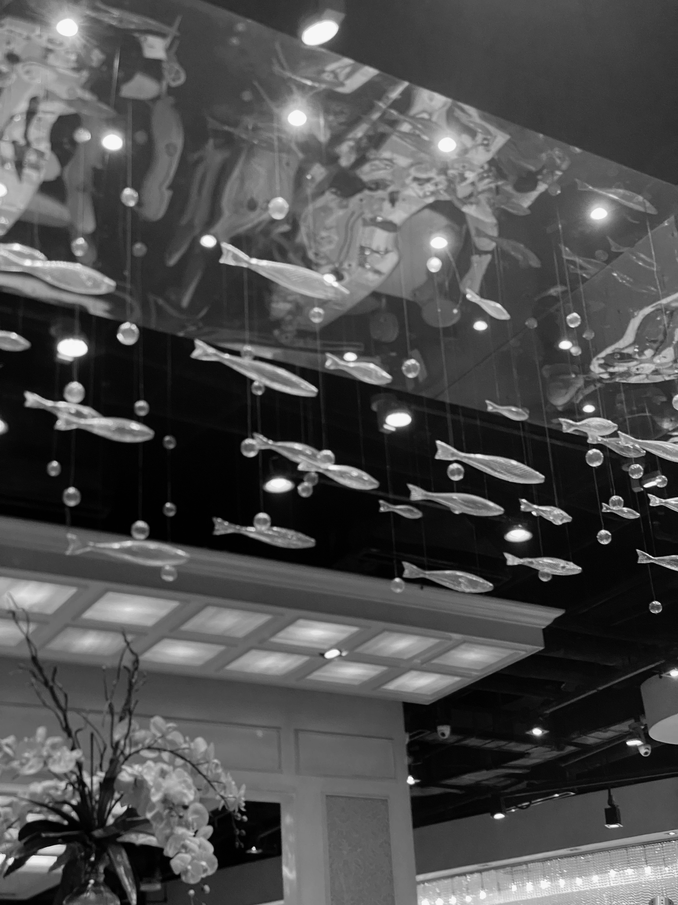
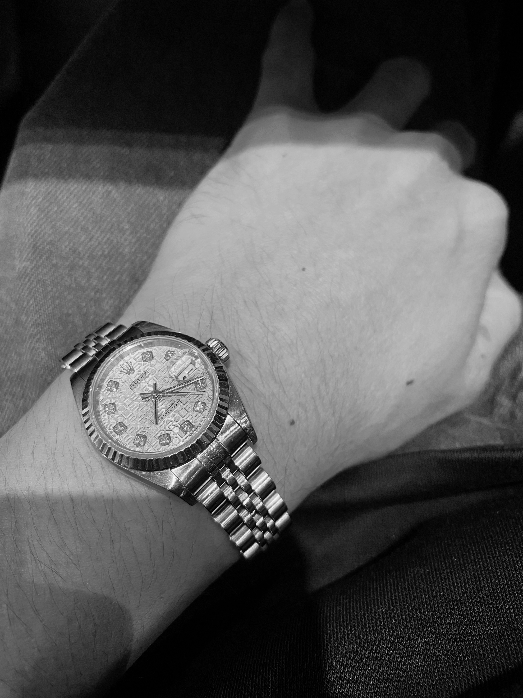
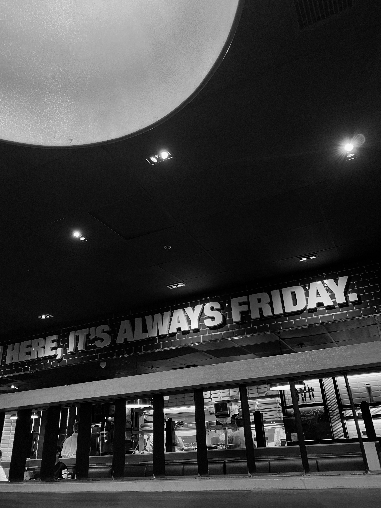
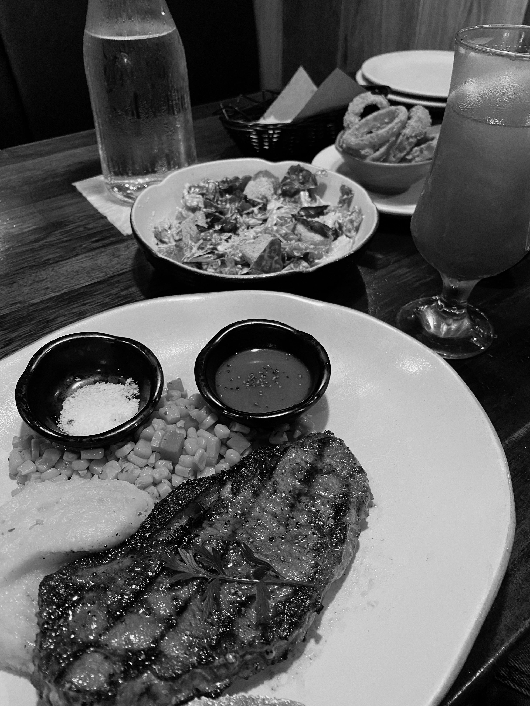

RICKY CANONCE
PHOTOGRAPHER/VIDEOGRAPHER
I am a dedicated student who is passionate and determined about a multimedia arts degree. I have developed my skills in graphic design, video production, and photography, having had a strong background in multiple disciplines of multimedia. My academic background has provided me with a deep understanding of the artistic as well as the technical aspects of multimedia art, so that projects can be approached with both technical accuracy and creative elegance.
CONTACTS
+63 905 619 1738
@canoncericky
Phase 4A, Balete St., Sto. Niño,
Meycauayan, Bulacan
MY EDUCATION
2016 - 2020
Junior High School
(Montessori de Sto. Niño)
2020 - 2022
Senior High School
(Manila Central University)
CURRENT TIME
Second-Year College
(FEU Institute of Technology)
MY WORKS/PROJECTS
In terms of my works and projects. I love capturing photos and videos, but for this section of the page, I'll show you my favorite photos taken with my preferred color grading presets.




MY LIFE
Currently, I'm just living my life and loving every moment. Also, when I have free time, I enjoy playing video games, but I prefer to spend it with my friends and family, particularly my partner.